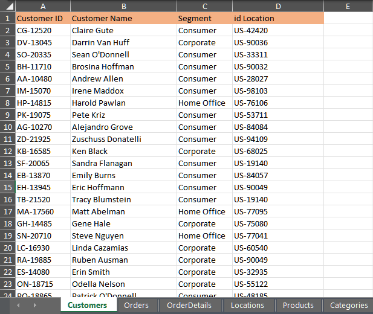
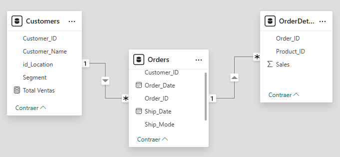
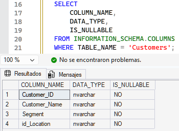
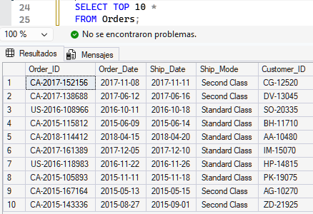
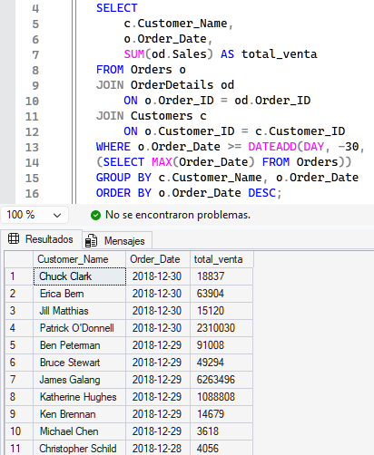

Performance de Ventas — Análisis de Ventas y Clientes con SQL y Power BI
Proyecto Final · Coderhouse — Análisis de Datos · Dataset Retail (Superstore) · SQL Server & Power BI · Período analizado: 2015 – 2018
Este análisis explora un conjunto de datos de ventas de tipo retail con el objetivo de identificar patrones de comportamiento de clientes, la evolución temporal de las ventas y oportunidades de mejora en la toma de decisiones basada en datos. Se integraron las tablas Customers, Orders y OrderDetails mediante SQL Server, y se construyó un dashboard interactivo en Power BI para comunicar los hallazgos al equipo de marketing.
Facturación Total
$1.113,08 M
2015 – 2018 acumulado
Cantidad de Pedidos
4.922
9.798 ítems vendidos
Ticket Promedio
$226,14 K
por pedido
Clientes Únicos
793
Top 10 = 14,7% de ventas
Resumen ejecutivo
El volumen de ventas no se distribuye de manera uniforme entre los clientes: el top 3 de compradores (Emily Phan, Anna Gayman y Patrick O'Brill) concentra una porción significativa de los ingresos, en línea con el principio de Pareto. Desde la perspectiva temporal, las ventas muestran un crecimiento sostenido entre 2015 y 2018, con el salto más fuerte entre 2016 y 2017 (+39,6%), seguido de una desaceleración en 2018 (+6,8%) que podría indicar maduración del mercado. El segmento Consumer lidera con el 55% de las ventas, seguido por Corporate (29%) y Home Office (16%). Como próximo paso se recomienda aplicar un modelo de segmentación RFM para diseñar campañas de retención y reactivación.
Evolución Temporal
Ventas por Año
Crecimiento sostenido 2015–2018, con desaceleración en el último año.
Clientes de Alto Valor
Ventas por Comprador (Top 8)
Anna Gayman lidera con $24,9 mill. en ventas acumuladas.
Mix de Negocio
Ventas por Segmento de Cliente
Consumer concentra más de la mitad de la facturación total.
Tasa de Crecimiento
Crecimiento Interanual (YoY)
El pico de crecimiento se dio entre 2016 y 2017 (+39,6%).
Proceso y evidencia
Capturas reales del dataset, el modelado de datos y las consultas SQL desarrolladas para este informe.
Descripción del Dataset
Tabla Customers — fuente original en Excel
Hoja "Customers" del archivo retail antes de su exportación a CSV e importación a SQL Server.

Detalle de columnas: Customer ID, Customer Name, Segment e id Location.

Modelado de Datos
Modelo relacional en Power BI
Relaciones entre Customers, Orders y OrderDetails que sostienen el análisis integral de ventas.

Preparación de Datos
Verificación de esquema — Tabla Customers en SQL Server
Consulta sobre INFORMATION_SCHEMA.COLUMNS para validar tipos de datos y nulabilidad.

Resultado: columnas Customer_ID, Customer_Name, Segment e id_Location, todas no nulas.

Exploración Inicial
Vista de la tabla Orders
SELECT TOP 10 sobre Orders para revisar fechas, modo de envío y cliente asociado.

Consulta SQL Principal · EDA
JOIN de Orders, OrderDetails y Customers — últimos 30 días
Cliente, fecha de compra y total de venta, filtrado por los últimos 30 días y ordenado por fecha descendente.

Fuente: dataset retail (Superstore) procesado en SQL Server e integrado en Power BI · Proyecto Final — Coderhouse, Análisis de Datos.